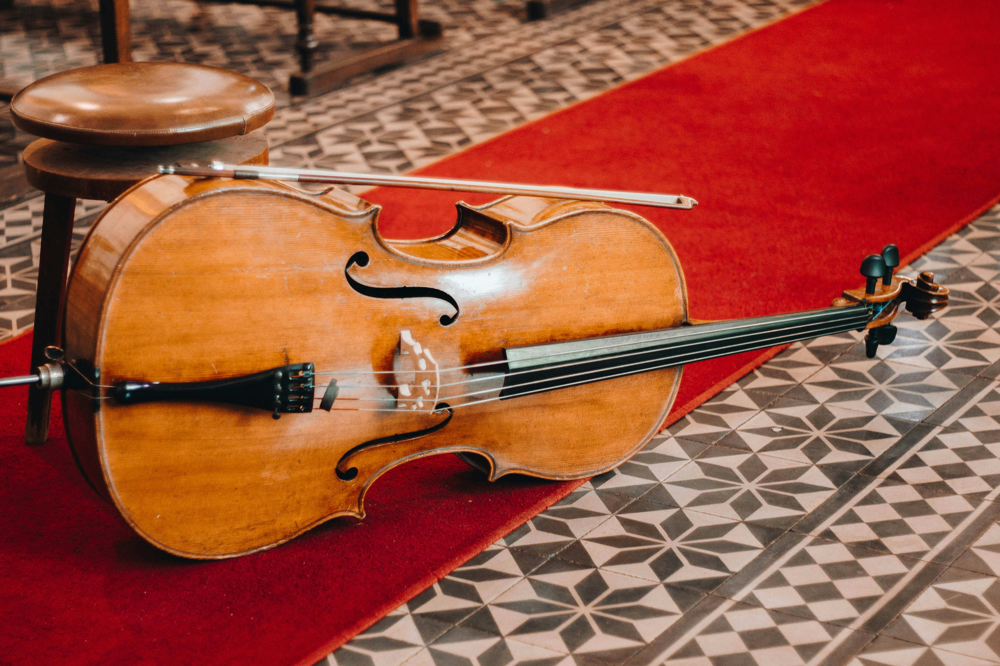

Description:
The cello is a larger string instrument known for its rich, warm, and deep sound. It is commonly used in orchestras, chamber groups, solo music, and film scores. The main parts of a cello include the scroll, tuning pegs, neck, fingerboard, strings, bridge, body, sound holes, tailpiece, endpin, and bow. Unlike the violin and viola, the cello rests on the floor with the help of an endpin.

How to Play the Cello:
The cello is played while seated, with the instrument resting between the player’s knees and supported by the endpin. The player draws a bow across the strings while pressing the strings against the fingerboard to change notes. The strings can also be plucked with the fingers for a different type of sound.